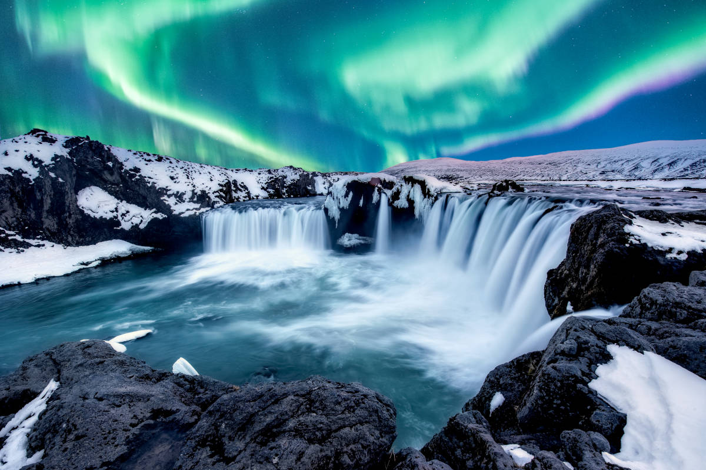
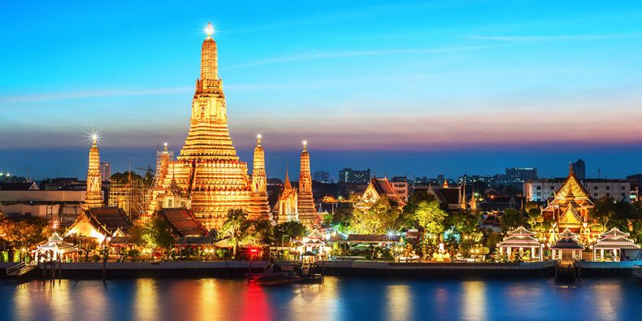
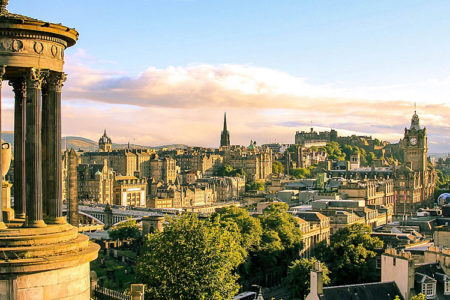

Islandia

Islandia cuenta con una población de más de 350000 personas. ¡Hay más ovejas que islandeses!(460000)
Islandia se encuentra en mitad del Océano Atlántico, al oeste de Noruega y al norte del Reino Unido. Debido a su carácter insular, no tiene frontera con ningún otro país europeo, aunque los territorios más cercanos a sus lindes son Groenlandia y las Islas Feroe.
La geografía de Islandia es muy particular, marcada por su vibrante actividad volcánica y la importante presencia de glaciares (¡abarcan más del 15% del territorio del país!). Esto, sumado a su complicada climatología, provocó que la historia de Islandia como un lugar poblado no comenzase hasta prácticamente el siglo IX d.C.
Algunos de los lugares más bonitos y más visitados de Islandia son: Kirkjufell, el Glacial Vatnajökull y Dynjandi
 Inicio
Inicio
 Amsterdam
Amsterdam
Bangkok
Edimburgo
 Florencia
Florencia